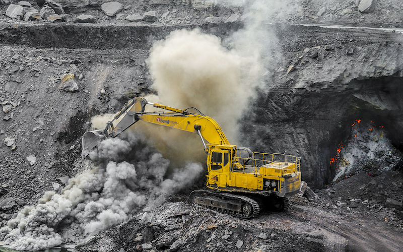

AI Electrical Consumption
AI services require data centers that generally powered via fossil fuels. By doing so, a notable amount of greenhouse gasses are emitted. As a comparison, one AI LLM request can use 10 times more than a single google search request.
AI Water Consumption
AI require data centers, of which many use an enormous amount of water. This carries an inherent risk to the global reduction of water, adding to the problem of water scarcity.
AI Mineral Unsustainability
AI systems require many components. Critical components required include rare earth metals. These rare earth metals are usually extracted via environmentally destructive means. This furthers the global climate burden due to the sheer amount of materials required to create these systems.
AI Misinformation
The problems posed by AI are many, none moreso at the forefront than misinformation. AI misinformation can lead to visual and stastical falsities propogated by bad faith actors attempting to cover up climate counterpoints. This information can spread quickly through social media and thereby altering public opinion.

AI Environmental Poisoning
The growing global contamination brought forth by AI is a byproduct of the need to keep producing more to keep up with growing demand. This in turn leads to the disposal of hardware which eventually leads to toxic hazardous materials (such as lead and mercury) leeching into the ground.

AI Lack Of Oversight
AI development has expanded at a rate faster than what can be analyzed. In the current world, many governments do not have laws set in place to allow proper accountability for the damage wrought.